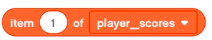
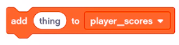
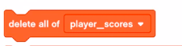
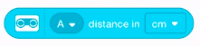

Lesson 6: Guess the Hand game
In this lesson we’ll implement a simple game with your robot. This program is a little more complicated than previous lessons as it will tie together some concepts and programming blocks that we only worked with briefly before. This will also work with some common difficulties in working with the MINDSTORMS robots and programs. And we’ll introduce My Blocks, which help you reuse code and create more compact and readable programs. This lesson should help you write more complex programs for other projects.
We’ll implement a guess the hand game you probably played as a kid. A friend would hide a coin in one hand, and you would tap the hand you thought the coin is in. If you guessed correctly, maybe you got to keep the coin!
Our robot has no hands or coins. Instead, we’ll use Force Sensors or buttons on the SPIKE Intelligent brick to represent a left and right hand. Your player will press one of those sensors or buttons to make their guess. Your program will randomly pick one side or the other to be the one that has the “coin” in it, and it will report back to the player if they guessed correctly. In fact, this is a two-player game: the first player to five correct guesses wins!
Given the game description, what kinds of data (information) does the program need in order to implement this game? Hint: look for nouns in the description.
Variables and Lists
We used a variable to coordinate events in a previous exercise, but we’ll give a more complete definition here. A variable has a descriptive name and a value. You provide the name like score to hold the value, which would be the player’s current game score. What makes variables useful is that their value can change. In gaming, the score changes as you play (e.g. you slash fruit, beat the boss, or gobble up ghosts), so the program would update the value for a variable named score to the new score every time you do something to gain points.
You can rename variables when you change your program, maybe you think of a more descriptive name or maybe you change how the variable is used and the old name doesn’t make sense. the SPIKE App will also change any usages of this variable to the new name throughout your program. The name of the variable will not change while your program is running on the SPIKE Intelligent brick though, only the value changes. You can also delete variables from your program and the SPIKE App will first check if the variables is still being used in the program. If desired, you can then delete all the blocks that use the variable, or decide not to delete the variable.
You can also name variables to give hints as to their use. is_correct_guess is a boolean because of the is_ hint in the name. You might add num to a number variable, or txt or str (other programming languages call text strings). Then you might be able to spot bugs in your program when it uses the wrong kind of data with a variable.
Besides storing data like the score or player name, variables let you customize the behavior of the program because the robot can remember things. Let’s say we are working with the Robo-Patrol challenge project. We could modify that program so that the robot stops on the second line it detects. We would add a variable named found_line, initialize its variable to zero (meaning false, and that it has not found any lines yet) at the start of the program. When we detect a line, and found_line is still 0, we change found_line to 1 (true). Then the next time we detect a line, found_line will be 1 and we can make the robot stop or do something else.
Lists make it more convenient to store and work with multiple pieces of related data. We say the list stores “items”, which is a number or string in the SPIKE App. Sometimes you could use multiple variables, with similar names. But that still limits you. If we defined variables to keep track of maximum scores named player_score_1, player_score_2, player_score_3, our program could only remember the three highest scores. If we used a list called player_scores, we could store and remember a nearly unlimited number of scores (our robot has only so much memory to store data).
The high scores list would have several items. Let’s say we’ve played the game five times with scores 256, 1024, 64, 16, 1701.
player_scores list
| Index | Value |
|---|---|
| 1 | 256 |
| 2 | 1024 |
| 3 | 64 |
| 4 | 16 |
| 5 | 1701 |
Then we could access each score by its index using the
item of list

block. In a real program we would also sort the scores by writing some additional code.
The “Guess the Hand” program will use a list to keep track of each player’s current score: the score at index 1 will be player 1’s score, and index 2 will be player 2’s score. “Guess the Hand” will not remember the maximum scores, since 5 is always the max score, and the program will stop when a player wins.
player_scores list in Guess the Hand
| Index (Player number) | Value(Player Score) |
|---|---|
| 1 | 2 |
| 2 | 5 |
In Table 2, player 1 has a score of 2 and player 2 has a score of 5, which means player 2 just won the game.
Lists also have a length that expressions in your program can use. The first Table 2 has a length of 5 because it currently stores the top five scores. The second Table 2 has a length of 2 because it stores the scores of two players.
Your programs should always have blocks to initialize all variables to known values at the beginning of the program. We call this ‘explicit initialization’. For text this might be a specific value, or it might be no value, which other programming languages call an empty string. For numbers, zero or one is typical, or some other value that makes sense in your program.
Lists should also be initialized with
add item to list

, or emptied with adelete all list items 
.Some programming languages have the concept of null or None, meaning the variable has no value, or the list does not exist. the SPIKE App variables will always have a value, and lists will also be empty or contain other items. The closest thing the SPIKE App has is empty text (a text variable that has no letter, numbers or symbols in it).
This is especially true with the SPIKE App. The variables view allows you to add list values, and it also seems to remember list values from the last time the program ran. Sometimes this might be useful, but for most programs this will cause problems. Make sure to clear and initialize lists at the start of your program.
Data Types
Like most programming languages you’ll encounter, the SPIKE App supports a number of data types. Each variable or expression in the SPIKE App has a specific data type at any given time in a program.
- Boolean: A value meaning True or False. In the SPIKE App these are only available as expressions, the blocks with the pointy ends, such as
ultrasonic sensor distance expression
. We’ll use the numbers0forfalseand1fortrueand boolean expressions that check for equality. - Number: Numbers, values read from sensors, counts, etc.
- Text: Anything you can type from a keyboard, usually words, like
'LEGO'. Sometimes numbers are used as text in programs also, like'Star Wars Episode 4'or'123'.- In the SPIKE App, numbers and text can be used somewhat interchangeably. However, we’ll get strange results if we try to do math on with numbers and text, such as with an
add.
- In the SPIKE App, numbers and text can be used somewhat interchangeably. However, we’ll get strange results if we try to do math on with numbers and text, such as with an
- Lists: A sequence of numbers or string, as we’ve already discussed. For example
- high scores in a video game (
[ 42000, 1701, 4815162342, 98409, 5618 ]) - names of your friends
[ 'Monica Geller', 'Rachel Green', 'Chandler Bing', 'Phoebe Buffay', 'Joey Tribbiani', 'Ross Geller]`. - Lists might also contain a single item
[ 'Only me' ], or be empty[ ]. - Many programming languages use square brackets to represent lists or arrays, so we’re borrowing that here. In the SPIKE App, you’ll typically use a block to add one item to a list at a time.
- high scores in a video game (
Some programming languages are “strongly typed” (Java, C++). This means at every variable in the program has a specific data type, which does not change for the entire program. So a text value cannot be assigned to a number. A number can be assigned to text, but the number must be converted from its numerical format inside the computer (e.g. the number 256 is converted to text containing characters 2, 5, and 6). Programs must specify the data type of every variable it uses.
Other languages (Python, Javascript) are “loosely typed”. This means that a variable can contain any data type, or the data type it holds on to can change. This can make certain programs more flexible and easier to write, but can be a source of bugs.
Programs in the SPIKE App somewhere in between: mostly loosely typed but has some strongly typed behavior. It distinguishes between lists and other variables. So a variable can be text or a number, but it can’t be a list. Lists can contain a combination of text, but a list is always a list of zero or more items.
My Blocks
Most programming languages have ways to allow code to be reused. My blocks are how we reuse code in the SPIKE App (other programming languages call this a method, procedure or function). For some of these lessons, it’s likely you have had to repeat the same, or very similar code in a program. A my block should perform a specific, well-defined task.
For instance, in our maze program you figured out how to make a left or right turn with your robot. If you make more than one left or right hand turn to get through the maze, you repeated those blocks for the turn in different places in your program. We could have used a my block to contain the code for the turns. We could code a my block for left turn and another for right turn, writing the code for each turn once. Then we could use this code (or “call” is the term in most programming languages) as many times as needed to get through the maze.
In fact, we could implement a single my block for turns, and use an input (which works like a variable) to tell the my block we want to make a left or right turn.
This code reuse can save you time in coding your programs as you don’t have to write the same code multiple times. It will also reduce the size of your program and make it easier to move around the programming canvas.
My blocks can also make your programs more readable/easier to understand. It might take many blocks to implement a turn (e.g. the movement itself, setting the motor speed, etc). By putting this code in a my block, a block named turn_left makes it more clear what the program is doing versus a set of movement blocks. However, my blocks can have the opposite effect if you give them poor names, or a my block tries to do many things, or there are many my blocks that are too specific. So you’ll need to find a balance in the number of my blocks and their content for your program. Also, don’t be afraid to change your code as your needs change: it might make sense to combine my blocks, split one up into several, move code from one my block to another, or not use a my block depending on what you think is best for your program. This is all part of the normal work that programmers do in engineering and improving their programs.
Guess the Hand will define several my blocks so you’ll get some practice at this.
Game Design
Programmers sometimes use “pseudo code” (fake code) to design a program or help explain it to other programmers. pseudo code is a simplified or much less detailed version of real code or maybe just a written explanation, sometimes using the same terminology. A computer would not understand pseudo code, its mean to help humans. The pseudo code below will help explain the function of the program in words, and we’ll build the actual block program code in the next sections.
- Initializes all variables and lists
- Player 1 will start the game
- Scores start at zero
- Do the following repeatedly: this is the “game loop”
- Pick a random “hand” to store the coin
- Display something on the screen asking the current player to guess a hand
- Wait for the user’s guess: Force Sensor presses or button clicks
- Check the guess
- If the guess is correct, give the player a point and play a cheerful sound
- If the guess is not correct, play a disappointing sound: the player’s score remains the same
- If the player now has five points, stop the game loop
- Otherwise choose the next player (if current player was player 1, player 2 goes and vice versa) and resume the game loop.
- If we get here a player has scored 5 points and has won
- Show a message stating which player has won
- Play a “game over” sound
- Wait for a while so the players can read the message
- Stop the program
We’ll follow this pseudo code as we build the program next.